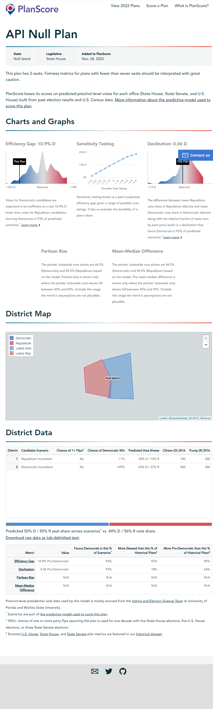

planscorer offers an R interface to PlanScore.org’s API.
Installation
You can install the development version of planscorer from GitHub with:
# install.packages('remotes')
remotes::install_github('christopherkenny/planscorer')Authentication
To use planscorer, you must have an API key from PlanScore. Otherwise, you will get a 403 forbidden error.
To get a key, follow the instructions here.
Once you have a key, use ps_set_key('your_key'). Optionally use ps_set_key('your_key', install = TRUE) to allow your key to be available across sessions.
Example
With a file, you can upload using the ps_upload_file() option:
library(planscorer)
## basic example code
file <- system.file('extdata/null-plan-incumbency.geojson', package = 'planscorer')
links <- ps_upload_file(file)
#> ℹ Using single-step upload.To read the data results:
ps_ingest(links)
#> # A tibble: 2 × 62
#> district democratic_…¹ democ…² democ…³ repub…⁴ repub…⁵ us_pr…⁶ us_pr…⁷ distr…⁸
#> <chr> <dbl> <dbl> <dbl> <dbl> <dbl> <dbl> <dbl> <int>
#> 1 1 155. 29.9 0 445. 29.9 100 300 0
#> 2 2 379. 29.6 0.998 221. 29.6 500 300 1
#> # … with 53 more variables: polsby_popper <dbl>, reock <dbl>,
#> # declination <dbl>, declination_absolute_percent_rank <dbl>,
#> # declination_is_valid <dbl>, declination_positives <dbl>,
#> # declination_relative_percent_rank <dbl>, declination_sd <dbl>,
#> # efficiency_gap <dbl>, efficiency_gap_1_dem <dbl>,
#> # efficiency_gap_1_dem_sd <dbl>, efficiency_gap_1_rep <dbl>,
#> # efficiency_gap_1_rep_sd <dbl>, efficiency_gap_2_dem <dbl>, …To capture the outputted figures on the site:
img <- 'man/figures/README-planscore.png'
ps_capture(links, img)
#> [1] "man/figures/README-planscore.png"
knitr::include_graphics(img)